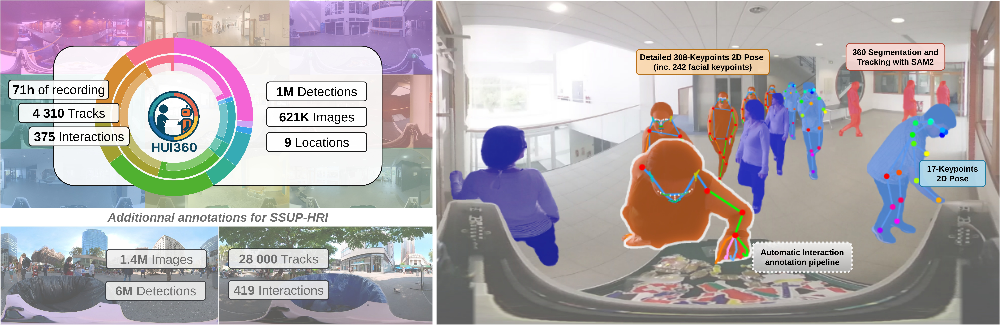
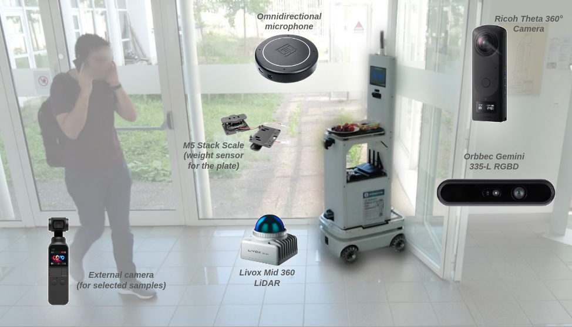

Dataset overview
Main dataset statistics.

Concept.
As robots increasingly operate in human-populated environments, anticipating human intentions is essential for enabling proactive and socially aware behavior. Automatic anticipation of human–robot interactions is thus emerging as a crucial perception challenge for embodied agents.
To this end, we introduce HUI360, the largest dataset for human-robot interaction anticipation in the wild and its set of baselines. The dataset was collected from a mobile robot, in the wild, over multiple days within a 3-month period, and in several environments, capturing natural, spontaneous behaviors from both passersby and users, and encompassing a diverse range of individuals. This variety enables evaluating and improving the generalization capabilities of interaction anticipation models.
We designed a pipeline and share code for automatic interaction annotation in arbitrary 360° equirectangular videos, along with interfaces for manual refinement. Using this pipeline, we release the HUI360 open set of 1M pre-processed annotations, including detailed 2D poses, facial keypoints, and segmentation masks, obtained using state-of-the-art computer vision methods and manually curated to ensure high-quality tracking and interaction annotation. Additionally, we release the raw panoptic 360° images captured from the robot’s egocentric viewpoint (on demand, for research purpose only in compliance with GDPR).
Finally, we establish benchmark baselines for interaction anticipation, including the first cross-dataset evaluations for this task: to this end, we also release 6M annotations for another existing in-the-wild outdoor dataset collected from a mobile robot (SSUP-HRI).
Main dataset statistics.

Concept.
How to gain access to the dataset.
We also provide the pipeline to automatically annotate 360° videos of human-robot interaction from the robot's egocentric viewpoint. You can run it with videos from cameras like the Insta360 attached to a robot or a person.
Recordings with Shelfy, the robot used to collect the dataset.

Sensorized Shelfy.
Mini paragraph on SSUP-HRI and how to get it with link to their website.
@article{TBD,
author = {Raphael Lorenzo-Louis and Fabio Amadio and Bertrand Luvison and Serena Ivaldi},
title = {HUI360: A dataset and baselines for Human Robot Interaction Anticipation},
journal = {TBD},
year = {2026},
}